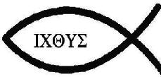

İsa ise bundan sonra gelecek çağın, “Balık Çağı”nın yol göstericisidir. Yani iki balığın. Balık sembolüne Eski Ahit’te çok rastlanır. Örneğin İsa, 5000 kişiyi ekmek ve sadece iki balıkla doyurmuştur. Görevine başlayıp Galilei’de yolculuğa çıktığında, iki balıkçıyla arkadaş olmuş ve balıkçılar onu takip etmiştir. İnsanların arabalarının arkasındaki İsa Balığı çıkartmasını hepiniz bilirsiniz. Bilmediğiniz şey aslında onun ne anlama geldiği. Bu, Balık Çağı sırasındaki Pagan Güneş Krallığı’nın astrolojik sembolüdür. Ayrıca İsa’nın doğumu kabul edilen tarih, bu çağın başlangıç tarihidir.
Gerçekten de İncil’de İsa’nın iki balıkla insanları doyurması ve iki balıkçıyla ilgili hikâyesi bulunmaktadır. Amerika’da arabaların arkasında balık resimleri de bulunmaktadır. Bu balığa “İsa Balığı” denmektedir. Ancak bu balık sembolünün “Balık Çağı” teorisinden daha iyi bir açıklaması var.
Balık sembolünün esas ismi Ichthys’tir. Bu kelime eski Yunanca’da balık anlamına gelir. Aynı zamanda İsa’ya işaret eden bir akrostiştir.
Yunancadaki kelimenin yazılışı ΙΧΘΥΣ şeklindedir.
I (i) : Yunanca “İsa” anlamına gelen Iesous kelimesinin baş harfidir.
Chi (kh) X: Yunanca “Mesih” manasına gelen Khristos’un baş harfidir.
Theta (th) Θ: Theou “tanrının” kelimesinin ilk harfidir
Upsilon (u) Y: Yunanca Huios “oğul” kelimesinin ilk harfidir.
Sigma (s) Σ: “Kurtarıcı” anlamına gelen Soter kelimesinin ilk harfidir.
Akrostişi okuduğumuzda «İsa Mesih; Tanrının oğlu; kurtarıcı» cümlesiyle karşılaşırız. Peki bu bu akrostiş niye önemli? Çünkü bu cümle otoritelerden gizli olarak Kilise ve din kurmaya çalışan ilk Hıristiyanların aralarında kullandıkları bir parolaydı. Yani “balık” kelimesinin devinim ya da çağlardan daha önemli ve pratik bir kullanımı vardı.
Peki İsa’nın doğumgünü olarak kabul edilen ve bugün de Milat olarak aldığımız tarih gerçekten de Balık Çağı’nın başlangıcı mı? Hem evet hem hayır; kime sorduğunuza bağlı. Astrologlara göre balık çağının başlangıcı için öne sürülen bir kaç tarih var; M. S. 498, M. Ö. 100 ya da M.S. 1.
Luka 22:10’a göre, havarilerinin İsa’ya “Senden sonra bir dahaki Paskalya nerede olacak?” diye sormaları üzerine İsa: “Bir şehre gireceksiniz ve orada elinde testiyle su taşıyan bir adam göreceksiniz. Onu takip edin ve gireceği eve girin” diye cevap verir. Bu ayet, astrolojik esinlenmelerin belki de en açık olanıdır. Testiyle su taşıyan adam Aquarius’tur. Su-taşıyıcısıdır ve her zaman testiden su döken bir adam olarak tasvir edilmiştir. İsa, Balık Çağı’nı temsil ediyordu. Güneş (Tanrı’nın Güneşi) Balık Çağı’nı (İsa’yı) terk ettiğinde, Aquarius’un (Kova) evine gelecektir; tıpkı Kova’nın (Aquarius) gün dönümü gerilemesinde Balık’ı takip etmesi gibi. İsa’nın aslında bütün söylediği, Balık Çağı’ndan sonra Kova Çağı’nın geleceğiydi.
Zeitgeist, buradaki pasajın, İsa hikâyesinin astrolojiden esinlendiğine dair en açık delil olduğunu söylüyor. Buradaki problemse filmin yapımcılarının İncil’deki pasajı yanlış alıntılamış olmaları. İsa’nın verdiği cevap doğru olsa da, sorulan soru filmde gösterilen soru değil:
“(8) İsa, Petrus’la Yuhanna’yı, “Gidin, Fısıh yemeğini yiyebilmemiz için hazırlık yapın” diyerek önden gönderdi.
(9) O’na, “Nerede hazırlık yapmamızı istersin?” diye sordular.
(10-11) İsa onlara, “Bakın” dedi, “Kente girdiğinizde karşınıza su testisi taşıyan bir adam çıkacak. Adamı, gideceği eve kadar izleyin ve evin sahibine şöyle deyin: ‘Öğretmen, öğrencilerimle birlikte Fısıh yemeğini yiyeceğim konuk odası nerede? diye soruyor.’
(12) Ev sahibi size üst katta, döşenmiş büyük bir oda gösterecek. Orada hazırlık yapın.”
Yani havarilerin sorduğu soru “sen gittikten sonraki Paskalya (Fısıh) nerede olacak” değil, “o akşamki Paskalya yemeği nerede yenilecek” sorusu.
Bir diğer nokta da kova burcu sembolüne dair söylediklerinin tam doğru olmaması; zira İncil’deki pasajda görülüyor ki ev sahibi adam testiden su dökmüyor, testiyi taşıyor. Yani sembolü doğru tasvir etmiş olsalar da İncil’deki pasajı anlatmak istedikleri hikâyeye uyacak şekilde esnetmişler.
Şimdi, zamanın ve dünyanın sonuyla ilgili hepimiz bir şeyler duymuşuzdur. Vahiy kitabındaki resimlemeleri saymazsak, bu konunun ana kaynağı Matta 28: 20 bölümüdür, bu bölümde İsa “Sizinle dünyanın sonuna kadar birlikte olacağım” der. Ama Kral James versiyonunda dünya kelimesi, diğer birçok tercüme hatası gibi, aslında yanlış tercüme edilmiştir. Aslında kullanılan kelime “Aeon”dur, ve “Çağ” anlamına gelir. “Sizinle çağın sonuna kadar birlikte olacağım”. Ki bu doğrudur, İsa’nın Balık Çağı, güneş Kova Çağı’na girdiğinde bitecektir. Bütün bu “Dünyanın Sonu” ve “Zamanın Sonu” teması, aslında astrolojik bir alegorinin yanlış tercümesidir. Ama gelin bunu, dünyanın sonunun geldiğine inanan yaklaşık 100 milyon Amerikalıya anlatın.
Filmin yapımcıları burada İncil’in en eski İngilizce tercümelerinden olan Kral James versiyonunda tercüme hataları olduğunu söylüyor; ancak filmin kaynaklarına baktığımızda İncil’den yaptıkları alıntıların hepsini İncil’in bu tercümesinden aldıklarını görüyoruz. Madem tercüme hatalı, niye bu versiyonu kullanıyorlar? Tercüme hatalarını sadece hikâyelerine uyduğu zaman dile getirmek ne kadar dürüstçe bilemiyorum.
İncil’in bir başka tercümesi olan Yeni Uluslararası Versiyon’da Matta 28: 20’de geçen söz gerçekten de “çağ”dır. Fakat kurulan bu ilgi de İncil’in yazarlarının Devinim hareketini bilip, ondan esinlendikleri ön kabulüne dayanıyor.
Diğer yandan İsa karakteri, edebi ve astrolojik olarak Mısır Güneş Tanrısı Horus’un tamamen kopyasıdır. Örneğin, Mısır’daki yaklaşık 3500 yıllık Luxor tapınağının duvarlarında bakire gebeliğini, Horus’un doğumu ve kutsanmasını gösteren resimler vardır. Resimler, Thaw’un bakire İsis’e Horus’a hamile kalacağını söylemesiyle başlar, daha sonra kutsal ruh Nef, bakireyi hamile bırakır, bakire doğum yapar ve bebek kutsanır. Bu hikâye İsa’nın hikâyesiyle tamamen aynıdır. İsa ve Horus arasındaki benzerlik inanılmazdır.
Luxor tapınağında bulunan resim Acharya S’nin teorisindeki en kilit noktalardan birisidir. Bu hiyerogliflerde anlatılan ve İsa’nın doğum hikâyesine (Nativity) benzediği iddia edilen ve resimlerin altındaki yazılarda detaylandırılan hikâyeyi daha önce gözden geçirmiştik. (Tanrı Amun’un kraliçeyle yatağa girmesi, yastık sohbeti, Kneph’in ruhu bebeğe üflemesi vs)
Yine de belirtmekte fayda var ki, İsis ve bebek Horus’un heykelleri, daha sonraki Meryem ve bebek İsa heykellerini çokça etkilemiştir. Buradaki benzerlik bariz ve yadsınamaz cinstendir. Ancak Acharya S ve kaynak olarak kullandığı 19. yüzyıl Mısırbilimcileri, bu benzerlik haricinde İsa ve Horus benzerliğini ikna edici olarak ortaya koyamıyorlar.
Ve araklama devam eder. Nuh ve Nuh’un gemisi hikâyesi tamamen bir kültürden alınmıştır. Büyük Tufan temasına antik dünyada çok rastlanır.
Söz konusu temaya farklı zaman dilimlerinden 200 farklı yerde rastlanabilir. Gene de bunun için çok gerilere gitmeye gerek yok, M.Ö. 2600 civarında yazılan Gılgamış Destanı’na bakmak yeterli. Bu destan tanrı tarafından meydana gelen bir tufandan, hayvanların bindirildiği bir gemiden, hatta İncil’de de olduğu gibi salıverilen ve geri dönen bir güvercinden, ve bunun gibi birçok benzerlikten bahseder.
Nuh Tufanı gerçekten de ilk olarak M. Ö. 18. yüzyılda yazılmış olduğu tahmin edilen Atrahasis destanında geçiyor. Burada da insanlara (çok gürültü yaptıkları için kızıp) tufan gönderen bir tanrı, gemi yaparak insanları ve hayvanları kaçıran bir kahraman, tekrar karayı bulma gibi motifler vardır. Nuh Tufanı’nın Ortadoğu kökenli dinlere nasıl girdiğine dair en kapsamlı çalışmalardan birisi Muazzez İlmiye Çığ’ın Kuran, İncil ve Tevrat’ın Sümer’deki Kökeni kitabında görülebilir.
Şimdi de Musa’nın çalıntı hikâyesi. Musa’nın doğumundan sonra, hasır bir sepete koyulduğu ve nehire bırakılıp ölümden kurtarıldığı söylenir. Daha sonra firavunun kızı tarafından bulunur ve bir prens olarak yetiştirilir. Sepetteki bebek hikâyesi direk olarak, M.Ö. 2250 civarında yazılmış olan Akkad’lı Sargon’un efsanesinden alınmıştır. Sargon doğar ve öldürülmesin diye hasır bir sepete koyulup nehre bırakılır. Bir kraliyet kadını olan Akki tarafından bulunur ve yetiştirilir.
Ayrıca Musa “Kanun Koyucu” ve taş tabletlerdeki “On Emir’i getiren kişi” olarak bilinir. Halbuki, tanrının bir dağda peygamberine kanunları iletme teması çok daha eskidir. Musa, mitolojik tarihteki sayısız “Kanun Koyucu”lardan sadece biridir. Hindistan’da Manou büyük “Kanun Koyucu”ydu. Girit’te ise Minos, Dicta Dağı’na çıkarak orada Zeus’tan kutsal kanunları öğrendi. Mısır’da ise Mises, tanrının ona verdiği ve taş tabletlere yazılmış kanunları taşırdı. Manou, Minos, Mises, Moses (Musa).
Sargon’un sepete bırakılma ve saray eşrafından birisi tarafından bulunmasına dair bilinen en eski belge M. Ö. 7. yüzyılda yani Musa hikâyesinin ortaya çıkmasından bir 300 yıl sonra yazılmış. Sargon’un hikâyesini anlatan daha eski tabletlerde ise Sargon’un sepet hikâyesine rastlanmamakta, ama kendisinin kralın bahçıvanı olduğu anlatılmaktadır.
Musa’ya benzediği iddia edilen ve Zeitgeist’ta verilen isimlere bir bakalım:
Hint kralı Manou, ilk insan, insanlığın ilk kralı ve Manusmrti ismiyle bilinen kanunları koyan kişi. Bu kanunların M. Ö. 200 yılından önce yazıldığına dair bir kanıt yok. Kaldı ki, Manou kanunları olarak bilinen bu kanunların gerçekten ilk kral Manou’ya ait olmadığı, aynı ismi rumuz olarak kullanan bir şaire ait olduğunu da düşünen tarihçiler mevcut.
Mısırlı Mises’ın kaynağı Lloyd Graham tarafından yazılan Deceptions and Myths of the Bible isimli kitap. İşin ilginci bu karakter başka hiç bir yerde herhangi bir şekilde karşımıza çıkan bir karakter değil. Yani hiç bir Mısırbilimci ya da tarihçi Mises’dan haberdar değil. Daha da ilginç bir nokta, Mises’in alındığı kaynak 1975 yılında yazılmış, başka hiç bir kitap yazmamış, tamamen gizli bir yazarın eseri. Kitap çok güvenilir değil zira tüm gezegenlerin bir zamanlar yıldız olduğunu ve Güneş’in de bir gün sönerek bir gezegene dönüşeceği gibi fantastik fikirler barındıran bir New Age fantezisi örneği.
Minos, Zeus ve Europa’nın oğlu olarak bilinen bir kraldır. Gerçek bir insandır yani. Her dokuz senede bir, bir mağaraya kapanıp babası Zeus’tan yeni kanunlar aldığını söyleyen bir kral. Elbette kralın kanunlarının geçerliliğini artırmak için kanunları doğrudan tanrıdan aldığını söylemesi çok da zor ve uzak bir ihtimal değil.
Ve elbette ki kağıt ya da benzeri maddeler üretilmeye başlanmadan önce her şeyin olduğu gibi kanunların da taştan tabletlere yazılmış olması gayet normal.
On Emir’e gelince, bu da Mısırlıların Ölüm Kitabı’nın 125. bölümünden alınmıştır. Ölüm Kitabı’nda yazan mısralardan; “Çalmadım” mısrası “Çalmayacaksın” olarak, “Öldürmedim” mısrası “Öldürmeyeceksin” olarak, “Yalan söylemedim” mısrası ise “Yalan yere şahitlik etmeyeceksin” olarak değiştirilmiştir.
Görüldüğü gibi eski Mısır inanışı, Musevi-Hıristiyan ilahiyatının temelini oluşturmaktadır. Vaftiz, ölümden sonra yaşam, mahşer, bakire doğumu, yeniden diriliş, çarmıha gerilme, gemi, sünnet, mesih, kutsal komünyon, büyük tufan, paskalya, Noel ve bunun gibi birçok öğe tamamen Mısır kökenlidir ve Hıristiyanlık ile Musevilikten çok daha eski tarihlere dayanır.
On Emir’de bulunan bu üç emir, insanların bir araya gelip toplu halde yaşamaya başladıkları zamandan beri her toplumda görülen ve topluluğun iyiliğine olan ahlak kurallarıdır. Zeitgeist, bu üç emiri örnek göstererek Mısırlıların Ölüler Kitabı’nın On Emir’in tamamının kaynağı olduğu izlenimini yaratmaya çalışmaktadır. Halbuki On Emir’in geri kalanı (Benden başka Tanrı’ya tapmayacaksın, Boş yere Tanrı’nın adını ağzına almayacaksın, Cumartesi çalışmayacaksın, Anne babana hürmet edeceksin vs) Ölüler Kitabı’nda bulunan emirler değildir.
Hatta Ölüler Kitabı’nın alıntılanan “Masumiyetin ilanı” bölümünde çok daha insancıl emirler bulunmaktadır. Bir kaç örnek saymak istersek : “Kimsenin fakirleşmesine sebep olmadım, yetim hakkı yemedim, açlığa sebep olmadım, kimseyi idama teslim etmedim, alışverişte hile yapmadım, çocuklara kötü davranmadım” gibi On Emir’e kıyasla daha insancıl emirler bile bulmak mümkün. Eğer Tevrat’ın yazarları Mısırlılardan alıntı yapacak olsalardı, On Emir’de haftanın hangi gününün tatil olması gerektiğini yazacaklarına, yukarıdaki daha önemli emirlerden birini yazarlardı gibi geliyor. Elbette bu benim spekülasyonum. Belki de o zamanlar cumartesi tatil yapmak çocuklara iyi davranmaktan daha önemli görülüyordu.
Zeitgeist’ta Yahudilik ve Hrıstiyanlıktan önce görüldüğü söylenen inanışlar ve motiflerden daha evvel bahsetmediklerimizi ele alalım:
Vaftiz töreni ya da dini tören banyosu birçok başka dinde mevcut. Hindu dinindeki Ganj nehrinde yıkanma ritüelleri ya da ilkel Orta Afrika kabilelerinin yağmur duasının bir parçası olarak yağmuru geciktirmekle suçlanan kişiyi başından su dökerek yıkamaları bu motife gösterilebilecek iki örnek.
Ahiret hayatı, ya da ölümden sonra yaşam da birçok dinin ortak noktası. Kızılderililerde insanlar öldükten sonra atalarının ruhlarına kavuşurken, Eski Mısır’da insanların öldükten sonra ruhlarının “Ka”ya kavuşacaklarına inanılırdı.
Ahiret sorgusu, yine birçok dinin ortak noktasıdır. Mısırlılarda ahiret sorgusunun bir bölümü yukarıda alıntı yaptığımız Ölüler Kitabı’ndan ezbere dualar okumaktan ibaretken, Zerdüştlükte İslam’da da var olan “Sırat köprüsü” motifine çok benzer olan Chinvat peretu vardır.
Çarmıha gerilmeyse biraz daha az görülen bir motif. Çarmıha gerilme en çok Roma döneminde uygulansa da daha önce de uygulandığına dair bilgiler mevcut. Çarmıha gerildiği anlatılan başka tek tanrı Sümer’de var olduğuna inanılan Inanna (Ishtar).
Ahit sandığı, yani Musa’nın On Emir’in yazılı olduğu tabletleri sakladığı söylenen sandığın benzeri pagan dinlerinde görülen bir motif değil. Benzer hiç bir obje yok. Bu iddianın kaynağı olarak Jordan Maxwell’in yazdığı That Old Time Religion isimli kitap gösterilmiş. Kitabın kaynakları arasında da Gerald Massey var ve Jordan Maxwell, “dünyayı yöneten gizli örgütler” türünden komplo teorilerini anlatan başka kitapların da yazarı. Yani ne kadar güvenilir olduğu tartışmalı bir kaynak.
Erkek sünneti gerçekten de eski Mısır’dan beri görülen bir gelenek.
Mesih ya da kurtarıcılar denirken kastedilen şey “kahraman” ise, o zaman birçok dinde kahramanlıklar göstermiş dini figürlere rastlamak mümkün. Ancak bu türden bir tanımlama çok geneldir ve İsa ile Musa dahil birçok başka karaktere uyabilir. Ancak eğer burada kastedilen şey ölümden sonra yaşama dair bir kurtarıcılıksa, o türden tanrı ya da kahraman pek yok. Yani “”bana inanırsanız, beni takip ederseniz ruhunuz kurtulur” türünden bir figür olmasa da insanları dünyevi dertlerden kurtaran (yağmur yağdıran, kıtlığı bitiren, hastalıklardan kurtaran vs) tanrısal figürler birçok yerde karşımıza çıkmaktadır.
Eucharist ya da daha yaygın bilinen ismiyle Komünyon, ekmek ve kırmızı şarabın İsa peygamberin vücudunu ve kanını temsil ettiği, İsa’nın son akşam yemeğini temsil eden bir ritüeldir. Roma Mitharizminde benzer bir uygulama olsa da şarap ve ekmek burada Mithras’ın vücudu ve kanını sembolize etmiyor. Ekmek ve şarap tüketilmesi haricinde benzerlik yok.
Büyük Tufan, daha önce de bahsettiğimiz gibi Akad ve Sümer geleneğinden Eski Ahit’e giren bir motif.
Paskalya, gerçekten de pagan kökleri olan bir gelenek. Günümüzde İsa’nın çarmıha gerildikten üç gün sonra dirilmesini anmak için kutlanır. Boyalı yumurta ve tavşan gibi motifleri vardır. Paskalya’nın kökü Eski Ahit’te geçen ve Tanrı’ya ok atabilmek için kule yaptırmasıyla ünlü olan Nuh’un torunu Babil kralı Nimrod’a ve tanrıça İnanna’ya uzanan bir gelenektir. Tavşan Babillilerde doğurganlığı simgeleyen bir motiftir. Paskalya yumurtası da Fırat nehrine cennetten düşen ve içinden Tanrıça Ishtar çıkan büyük yumurtayı sembolize ediyor.
Noel bayramı, yani İsa’nın 25 Aralık’ta kutlanan doğumgünü, M.S. 200’lü yıllara kadar bu şekilde kutlanan bir bayram değil. Hatta genel görüşe göre 25 Aralık tarihini ortaya atan kişi Sextus Julius Africanus isimli 3. yüzyılın başlarında öldüğü bilinen bir Hıristiyan gezgin ve tarihçi. Bu fikrin çıkış noktası da Tanrı’nın dünyayı 25 Mart’ta yarattığı, İsa’nın da ana rahmine o gün düştüğüdür. Bu tarihten sonra 9 ay eklenirse 25 Aralık tarihini bulan Julius Africanus bu tarihi öne sürmüştür. Fakat daha önce İncil’e göre İsa’nın doğumgününün kış aylarında olamayacağından bahsetmiştik.
Pesah (Hamursuz) bayramı, Yahudilerin Mısır’dan kaçışlarını anmak amacıyla kutlanan bir bayram. Filmin bu benzerlik için gösterdiği kaynaksa Gerald Massey’in daha önce de bahsettiğimiz Ancient Egypy, the Light of the World yani “Dünya’nın ışığı Antik Mısır” isimli kitabı. Demek oluyor ki Pesah’ın esas kaynağı muhtemelen Mısır. Ancak diğer hiç bir Eski Mısır kaynağında Pesah’ın sebebine benzer bir sebeple kutlanan bayram yok. Mısır’la Pesah bayramının buluştukları tek nokta, M.Ö. 419 yılında yazılmış ve 1907 yılında keşfedilmiş olan ve Elephantine Papirüsleri’nin bir parçası olan “Pesah mektubu” isimli doküman. Bu mektup, Pesah bayramının nasıl kutlanacağını detaylı olarak anlatan bir mektup. Mektuplar halen Berlin’deki Mısır müzesinde sergilenmekte. Pesah mektubu Ocak 1907’de keşfedilmiş. Gerald Massey’in son kitabı olan Ancient Egypt The Light of the World’ün aynı yıl yayımlandığını düşünürsek bu mektubun Massey’in kitabında bahsi geçen bir evrak olma ihtimali yüksek. Her durumda Eski Ahit’teki Mısır’dan çıkış hikâyesi M. Ö. 1000 yılından önce yazıldığı için, M. Ö. 400’lerde yazılan ve bayramın detaylarını ortaya koyan bir mektubun Eski Ahit’e girebilecek bir şey olduğunu düşünmek zor.
İlk Hıristiyan tarihçilerden ve savunucularından olan Justin Martyr şöyle yazmıştır: Bizler, öğretmenimiz İsa cinsel ilişki haricinde doğdu, çarmıha gerildi, öldü, yeniden dirildi ve cennete yükseldi dediğimizde, bizim Jüpiter’in oğullarına inandığımızı sanan insanlardan farklı bir şey iddia etmemiş oluruz.
Bir başka deyişle Justin Martyr şöyle demiştir: “O bir bakireden doğdu, Perseus’a (Yunan Tanrısı) benzer şekilde. Bu çok açık ki Justin ve diğer ilk Hıristiyanlar, Hıristiyanlığın pagan dinlerine çok benzediğini biliyorlardı. Neyse ki Justin buna bir çözüm buldu. Bu konuda çok kafa yordu, Şeytan yapmıştı. Bütün bunları önceden sezen Şeytan İsa’dan önce dünyaya geldi ve pagan dünyasındaki bu karakterleri yarattı.
Zeitgeist’ın Justin Martyr’den alıntıladığı bölümün kaynağı Martyr’in İmparator Antoninus Pius’a yazdığı İlk Savunma isimli mektubun 21. bölümü. Eğer filmin alıntı yaptığı yerin devamını okursak, görüyoruz ki Martyr İsa’nın özelliklerine sahip olan başka tanrıların isimlerini de sayıyor: Öğretmen olan Merkür, hastalıkları iyileştiren ve yıldırım çarpması sonucunda cennete yükselen Esculapius, işkenceyle parça parça edilen Bacchus, ateşe atlayan Herkül, insan olarak doğan ve sonra cennete yükselen Leda, Dioscuri, Perseus ve Bellerophon. Burada Justin Martyr’in esas söylediği şey “sizin Tanrılarınız da iyi, ancak hiç birisi İsa gibi değil, bizimkisi daha iyi”.
Peki Justin Martyr, Perseus’tan bahsederken İsa gibi bakireden doğduğunu mu iddia ediyor? Bunun için Perseus hikâyesini inceleyelim:
Perseus’un annesi Danae’nin babası bir kraldır ve Danae’yi bir kaleye hapseder. Zeus bu kaleye “altından bir yağmur” olarak geliyor ve Danae’yi hamile bırakıyor. Ancak İsa’dan ayrıldığı nokta, Zeus’un Danae’nin bekâretini bozmasıyla ilgili bir bilginin olmaması. Yani eğer Danae kaleye hapsedilmeden önce bakireyse bile, Zeus’un ziyaretinden sonra bekâretini koruduğuna dair bir bahis yok. Burada Martyr’in “bakireden doğum”dan ziyade “mucizevi doğum”dan bahsettiğini düşünürsek, parçalar yerine daha iyi oturuyor.
Acaba gerçekten de Martyr tüm bu diğer tanrılarla olan (aslında çok da olmayan) bu benzerliklerin sorumlusu olarak Şeytan’ı mı gösteriyor? Evet, ama Zeitgeist’ın göstermeye çalıştığı şekilde değil. Aynı mektubun 54. bölümünde yazan şey yaklaşık olarak şu: “İsa’nın geleceği kehanetinde bulunan önceki (İbrahim soyundan gelen) peygamberlerin söylediklerini temel alan ve şeytana uyan günahkâr insanlar, İsa’nın özelliklerini kendi pagan tanrılarına yakıştırdılar”. Yani Şeytan, geleceği görerek önce gelip İsa’ya benzeyen tanrı fikrini insanların kafasına sokuyor gibi bir iddiası yok. Onun yerine Eski Ahit’teki kurtarıcı tasvirini gören günahkâr insanların kendi pagan tanrılarına bu özellikleri yarım yamalak bir biçimde yakıştırdıklarını söylüyor Martyr.
Zeitgeist burada Justin Martyr’in sözlerini esas anlamlarından farklı bir şekilde kullanarak Martyr’in söylemediği şeyleri söylemiş gibi gösteriyor. Martyr’in İmparator’a yazdığı mektubun amacı İsa’nın tek ve gerçek tanrı olduğunu ispatlamak. Bu da mektupta yazanları cımbızla çekmek yerine mektubun tamamını okuyarak görülebiliyor.
Zeitgeist burada kısa bir ara vererek Amerikalı komedyen Bill Hicks’in sesinden “Genç Dünya” inancını ve dinazor fosillerini şeytanın işi olarak gören köktendinci Hrıstiyanları tiye alıyor. Genç Dünya yaratılışçılığı inancı çok eski olsa da, formüle edilmesi 17. yüzyılda yaşayan Ussher isimli bir papazın ortaya koyduğu Ussher Kronolojisi isimli tarihi senaryoya dayanır. Bu kronoloji İncil’in (Eski ve Yeni Ahit) kelime manasıyla okunarak, İsa’ya kadar bahsi geçen tüm peygamberlerin yaşlarını toplaması ve Dünya’nın yaratılışının M.Ö. 23 Ekim 4004 Pazar günü akşamüstü olduğunu bulması olarak özetlenebilir. Benzer bir hesabı İsaac Newton da yaparak yaratılışın M.Ö. 4000 yılında olduğunu söylemiştir. Bugün dahi Dünyanın yaşının 6000 yıl civarı olduğunu iddia eden köktendinci Hrıstiyanlar vardır.
Bu köktendincilere 65 milyon yıllık Dinazor fosilleri gibi şeyler gösterildiği zaman verdikleri cevap aşağı yukarı şöyledir : “Şeytan, o dinazorları insanları Tanrı’nın yolundan saptırmak için oraya koydu” ya da “o dinazorları oraya inancımızı sınamak için Tanrı koydu ve 65 milyon yıllıkmış gibi gösterdi”. Ardından film devam ediyor:
İncil, kendinden önceki neredeyse bütün dini efsaneleri kullanmış bir astro-ilahi metinden başka bir şey değildir. Diğer yandan bir karakterin özelliklerinin, başka bir yeni karaktere aktarılmasına aynı kitabın içinde de rastlanır. Eski Ahit’te Yusuf’un hikâyesi anlatılır. Yusuf, İsa’nın bir prototipidir.
İkisi de mucizevi şekilde doğmuştur. Yusuf 12 erkek kardeşten biridir, İsa’nın 12 havarisi vardır. Yusuf 20 gümüş akçeye, İsa 30 gümüş akçeye satılmıştır. Kardeşi “Yahuda” Yusuf’un satılmasını önerirken, havari “Yahuda” İsa’nın satılmasını önermiştir. Her ikisi de görevlerine 30 yaşında başlamıştır. Ve benzerlikler sürer gider.
Filmin bu sefer iddiası Yusuf’un aslında İsa’ya dönüşecek olan karakterin bir tür eskizi olduğudur. Peki iddiaları ne kadar sağlam görelim: Yusuf, Yakup (Jacob) ve Rachel’in oğludur. Yakup’un üç değişik eşinden toplam onbir oğlu ve bir kızı vardır. Yusuf, Yakup’un dördüncü eşi Rachel’in ilk oğludur. Mucizevi doğumdan kasıt Rachel’in çocuğu olmadığı için Tanrı’ya yakarması, Tanrı’nın da duasını kabul etmesidir. Aynı olay Yakup’un diğer eşlerinden Leah için de söz konusudur. Yani mucizevi doğum sadece Yusuf için değil, Leah’ın çocuğu için de geçerlidir aslında. Ayrıca bu mucize, bakireden doğumdan çok daha mütevazi bir mucize gibi görünmektedir.
Yusuf 12 erkek kardeşten birisidir. İsa’nın 12 havarisi vardır. Yani İsa 12 kişilik grubun dışında 13. kişiyken, Yusuf doğrudan 12. kişidir. Filmde geçen cümle tam olarak şudur: “Joseph was of 12 brothers”, yani “Yusuf 12 erkek kardeşten birisidir”. Burada eğer film doğrudan “Yusuf’un 12 kardeşi var” deseydi; o zaman 11 erkek ile 1 kız kardeşi olduğunu söylemek zorunda kalacaktı ve izleyici bunların 12 havariye benzemediğini görecekti. Bu yüzden film bu ufak kelime oyununa başvurmak zorunda kalıyor.
İsa, 30 gümüş para karşılığında Romalılara havarisi Judah tarafından ihbar ediliyor. Yusuf’un abilerinden Judah da kardeşini 20 gümüş para karşılığında köle tacirlerine satıyor. Ancak hikâyede farklı bir yön var, o da Judah kardeşini köle tacirlerine satmayı önerdiği zaman diğer kardeşlerin aralarında konuştukları şey Yusuf’u öldürüp öldüremeyecekleri. Yani Judah kardeşini (asil sebeplerle olmasa bile) muhtemel ölümden kurtarırken, Judas İsa’yı idam edileceğini bile bile ihbar etmiştir.
İsa’nın peygamberliği 30 yaşında başlıyor. Yusuf 30 yaşında Firavun’un sarayına hizmet etmeye giriyor. İsa’nın yetişkinliğe ulaşmasından 30 yaşında peygamberliğe başlamasına kadar olan sürede ne yaptığı pek bilinmiyor. Ancak Yusuf’un Firavun’un sarayına rüya yorumcusu olarak yükselmeden önce yaptığı işler arasında hapishane gardiyanlığı ve kâhyalık gibi görevler var. Eğer “görev”den anlaşılacak olan şey Tanrı’nın sözünü yayma göreviyse Yusuf buna çok daha önceleri başlıyor. Kahyalık yaparken efendisinin karısı, Yusuf’a cinsel tacizde bulunduğu zaman Yusuf bunu Tanrı’nın emrine karşı gelmemek için reddediyor.
Yani Yusuf eğer İsa’nın eskiziyse bile, İsa’yı anlatan yazarlar çok genel özellikler dışında Yusuf’tan esinlenmiş gibi görünmüyorlar.
Peki 12 havarisiyle gezen, hastaları iyileştiren, Meryem’in oğlu İsa adında birinin yaşadığını kanıtlayan İncil dışında herhangi bir delil var mıdır? İsa’nın yaşadığı iddia edilen zaman aralığında ya da daha sonraları Akdeniz çevresinde sayısız tarihçi yaşadı. Bunların kaç tanesi bu insanı kaleme aldı? Hiçbiri. Buna rağmen, dürüst olmak gerekirse İsa’nın varlığını savunanlar birbirleriyle çelişkili değildir. İsa’nın varlığına kanıt olarak dört tarihçi referans kabul edilir. Genç Pliny, Suetonius ve Tacitus bunların üçüdür. Her birinin, bu konu hakkında yazdıkları en fazla birkaç cümleden ibarettir ve yazılar “Christus” ya da “Christ” hakkında yazılmıştır, ki bunlar aslında isim değil unvandır. “Vaftiz Edilmiş Kişi” anlamına gelirler. Dördüncü referans ise, sahte oldukları yüzyıllardır bilinen Josephus’un metinleridir. Ne yazık ki hala doğru kabul edilirler.
İsa gibi mucizevi bir karakter, gerçekten de çağdaşları tarafından defalarca kayıtlara alınacak türden bir karakterdir. İsa birçok mucizeler göstermiş bir liderdir. Niye İsa’nın gösterdiği bu mucizevi olaylara dair İncil dışında tarihsel kaynak yok?
Yusuf’un ve Meryem’in oğlu, 12 havarisiyle gezen bir ruhani karakter olan Nasıralı İsa ile Tanrı’nın oğlu, 5000 kişiyi iki balıkla doyuran, hastaları iyileştiren, şeytan çıkaran, suda yürüyen İsa peygamber arasında farklar var. Nasıralı İsa’nın yaşamış olmasıyla Nasıralı İsa’nın gerçekten Tanrı’nın oğlu olması, mucizeler göstermesi arasında fark var. Film bu iki ayrı olayı tek bir olaymış gibi göstererek, gerçekten yaşamış olma ihtimali olan ama muhtemelen İncil’deki hikâyelerdeki anlatılan karaktere pek yakın olmayan bir insanı hiç yaşamamış gibi göstermeye çalışıyor. Bu da false dilemma -sahte ikilem- adı verilen bir mantık hatası. Üçüncü bir ihtimal daha var. Ancak bu üçüncü ihtimale geçmeden önce filmde bahsi geçen tarihçiler İsa için ne diyorlar kısaca bakalım:
Tacitus : M. S. 116 yılında yazdığı Annal’ın (Yıllıklar) 15. kitabında“Christus isimli birisinin takipçileri olan Hıristiyanların M.S. 64 yılındaki Büyük Roma yangınının sorumluları” olduklarını söyledikten sonra, “Christus’un Tiberus’un yönetimi altındaki vali Pontius Pilate’nin ölüme mahkum ettiği birisi” olduğunu belirtir. Burada Tacitus’un konusu İsa değil, Hıristiyanlardır.
Genç Pliny: 61-112 yılları arasında yaşamış Romalı vali. Hayatına dair detaylar Epistulae isimli mektup arşivinden geliyor. Genç Pliny, İmparator Trajan’a yazdığı mektuplardan birinde Hıristiyan kâfirlere ne gibi cezalar vermesi gerektiğini danışır. Bu mektupta geçen ifade aşağı yukarı şu şekildedir: “Kâfirlikle ve Hıristiyanlıkla suçlananları huzuruma getirttim ve tanrılarımıza bağlı olduklarına dair yemin etmelerini ve Hıristiyan tanrısına küfür etmelerini emrettim. Hıristiyan olmayanlar bunu kolaylıkla yaparken, Hıristiyanlar kesinlikle başka tanrılara tapmayı ya da kendi tanrılarına küfür etmeyi reddediyorlar”. Mektupta İsa’nın hayatına dair herhangi bir başka bilgi yok; sadece İsa’ya inananların inancının ne kadar sağlam ve ne kadar inatçı olduklarından bahsediliyor. Hıristiyanlara göre ilk Hıristiyanların bu sağlam inancı İsa’yı gerçekten gördükleri ve mucizelerine şahit oldukları için bu denli sağlam. Bu sağlam inanç İsa’nın gerçekten yaşadığına ve mucizeler gösterdiğine bir kanıt.
Suetonius: 70-130 yılları arasında yaşamış bir tarihçi. 12 Roma sezarının hayatlarını anlattığı De Vita Caesarum en önemli eseri. Suetonius, Claudius Sezar’ın hayatını anlatırken “Chrestus’un kışkırtmasıyla isyan çıkardıkları için Roma’dan kovulan Yahudiler”den bahseder. Claudius Sezar, 41-54 yılları arasında hüküm süren bir imparator. İsa ise tahminen en geç M. S. 36 yılında idam ediliyor. Bu durumda Cladius’un kovduğu Yahudileri kışkırtan kişinin İsa olması ihtimali yok. İncil’de İsa’nın Roma’ya gittiğine dair bir bilgi de yok. Burada İsa’yla alakası olmayan bir Chrestus’tan bahsediliyor.
Film son tarihçi olarak Josephus’u gösteriyor. Josephus, 37-100 yılları arasında yaşamış Yahudi asıllı bir Romalı tarihçi. The Antiquities of Jews (Yahudilerin İlk Çağları) isimli eserinde İsa’dan söz eder :
“Bu sıralarda İsa isminde bilge bir adam vardı, ki eğer ona sadece ‘adam’ denilemez; zira o mucizeler gösterdi, gerçeği mutlulukla kabul eden adamlara öğretmenlik yaptı. Hem Yahudilerden hem de Yahudi olmayanlardan taraftarlar topladı. O ‘Kurtarıcı Mesih’ idi. Ve Pilate, Yahudi ileri gelenlerinin söylediklerine kulak vererek onu idama mahkûm ettiğinde, onu sevenler onu terketmediler, buna karşılık İsa üçüncü günde tekrar dirildi ve sevenlerine göründü, tıpkı eski peygamberlerin kehanetlerindeki gibi. Ve Hıristiyan cemaati, ki onun adını almışlardır, bugün bile hâlâ varlıklarını sürdürmektedirler.”
Bu açık olarak İsa’yı öven bölümü Josephus’un yazmadığı artık bilinen bir gerçek. Aynı eserin 20. kitabının 9. bölümünde, “James adında bir kardeşi olan ve Mesih olduğu söylenen İsa” şeklinde bir tanımlama geçer. Bu kısımsa Josephus’a aittir. Bunun nasıl böyle olduğundan kısaca bahsedelim:
Origen, ilk Hrıstiyan yazarlardan birisidir ve M. S. 240’lı yıllarda yazdığı yazılarda Josephus tarihini referans olarak göstermektedir. Bugün elimizdeki Josephus tarihi kopyaları Origen’den çok sonraki tarihlere aittir. Burada ilginç olan, Origen’in 20. kitap 9. bölümdeki kısma referans vermesi ancak yukarıda alıntıladığımız ve İsa’yı doğrudan öven bölüme referans vermemesidir. Eğer Origen, Josephus’un yazdığı eseri İsa’nın gerçekliğine kanıt olarak göstermek istiyor idiyse o zaman niye ilk kısmı değil de daha genel bir ifadeyle yazılmış olan ikinci ifadeyi kullansın? Bu bize Origen’deki kopyada yukarıda alıntıladığımız kısmın olmadığını düşündürüyor.
Josephus, hayatı boyunca bir Yahudi olarak kaldı. Eğer İsa’nın mucizeler gösterdiğine ve eski peygamberlerin kehanetlerine uyan birisi olduğuna inansaydı o da Hıristiyan olurdu. Ancak kendisi Yahudi olarak kaldığı gibi, Yahudi kültürünü ve dinini yücelten eserler verdi.
Söz konusu bölümdeki kelimeler ve kullanılan dil, Josephus’un eserinin geri kalanıyla tutarlı değil. Sonuç olarak Josephus da diğer tarihçiler gibi İsa’nın gerçekten yaşadığına dair kanıt olabilecek şeyler yazmış değiller.
Öldükten sonra tekrar dirilen, herkesin gözü önünde cennete yükselen ve ona bağışlanan mucizeleri gerçekleştiren bir adamın tarihi kayıtlara geçmesi gerektiğini düşünebilirsiniz. Ama geçmedi, çünkü kanıtları incelediğimizde İsa figürünün gerçekte var olmadığı açıkça ortaya çıkmaktadır.
1. yüzyılda Roma ve Yunanistan çevresinde yaşadığı bilinen 19 tane tarihçi var. Bunların hiç birisi de İsa gibi bir karakterden bahsetmiyorlar. Ancak bu İsa yaşamamıştır, uydurmadır anlamına gelmiyor. Burada daha önce bahsettiğimiz bir sahte ikilem var. İsa’nın, yaşadıysa mucizeler gösteren, bakireden doğan mucizevi kişilik olması zorunluluğu yok. Nasıralı İsa pekâlâ yaşamış, etrafına insanlar toplamış bir tür dini lider olabilir. Kendisine atfedilen mucizeler de sonradan hikâyeye eklenmiş olabilirler. İncil’in İsa’nın tahmini ölüm tarihinden 30-40 sene sonra yazılmaya başlandığı düşünüldüğünde, bu açıklama daha makul görünmektedir. Hatta akla en yatkın açıklama bu gibi görünmektedir. Bu senaryo niye hiç bir tarihçinin İsa’dan bahsetmediğini açıklamaktadır ve İncil’in yazarlarının dini motifleri eklerken temel olarak kullanabilecekleri gerçekten yaşamış bir karakterin varlığıyla uyumludur. İncil’de anlatılan İsa’ya dair tarihsel kaynakların yokluğu mucizeler göstermemiş bir insanın yokluğunu kanıtlayan bir şey değil, İncil’de anlatılan hikâyelerin muhtemelen gerçeklere dayanmadığını gösteren bir şeydir.
Gerçek şu ki İsa, Gnostik Hıristiyan mezhebinin Güneş Tanrı’sıdır ve diğer pagan tanrıları gibi, mitolojik bir figürden ibarettir. Toplumsal kontrolü sağlamak için İsa’yı tarihi bir karakter haline getirmek, politik bir gereksinimdi. M. S. 325 yılında Roma hükümdarı Constantine, İznik Konseyi’ni topladı. Bu görüşmeler sırasında, politik olarak şekillendirilen Hıristiyanlık öğretileri kabul edildi ve bu tarihten itibaren Hıristiyanlık adına kan dökülmeye başlandı. Bunu takip eden 1600 yıl boyunca Vatikan, tüm Avrupa üzerinde etkili politik bir kale haline geldi, “Karanlık Çağlar” olarak anılan zaman dilimlerine liderlik ederek, Engizisyon ve Haçlı Seferleri gibi olaylara neden oldu.
İsa bir Güneş Tanrı ve pagan motifleriyle örülü bir karakterse bile film aradaki benzerliği ortaya koymakta pek de başarılı değil. Filmin ortaya attığı yeni iddia, İznik Konseyi’nde Hıristiyan dininin politik amaçlar uğruna tekrar yazıldığı ve bu yeni dinin sosyal kontrol sağlamak amacıyla kullanıldığı. Öncelikle dinlerin sosyal kontrol amacıyla kullanılması 4. yüzyıldan çok önceleri görülen bir durum. Politikacılar dinlerin sosyal kontrol için kullanılabileceğini İsa’dan ve İznik Konseyi’nden çok önceleri fark etmişlerdi. Tarihsel kaynaklara göre İznik Konseyi’ndeki bir numaralı konu İsa’nın Tanrı’nın oğlu olup olmadığı konusuydu. Tanrı’nın oğlu muydu, Tanrı’yla aynı özden mi yaratılmıştı, Tanrı’nın kendisi miydi gibi sorular tartışılmıştır. İznik Konseyi’nde karara bağlanan kavram, İsa’nın herhangi bir insan olmadığı ve doğrudan Tanrı’dan olduğu ve Tanrı’nın oğlu olduğudur. Bunun haricinde sosyal kontrole faydası olabilecek başka herhangi bir doktrin İznik’te tartışılmamıştır.
Vatikan’ın karanlık çağlara liderlik etmesi tüm kötü işlerine rağmen Vatikan’a bir miktar haksızlık gibi görünüyor. 5. ve 11. yüzyıllar arasındaki zaman dilimi savaş, yokluk, hastalık gibi birçok şey yüzünden karanlık çağ olarak adlandırılmaktadır. Ancak bu karanlık çağın sebebi, en azından tek sebebi Hıristiyanlık değil, barbar kavimlerin saldırıları, ekonomik sıkıntılar ve salgın hastalıklar gibi halkı doğrudan etkileyen olaylardır.
Haçlı seferleri, dini temellere dayanmasına rağmen pratikte batıya doğru olan Müslüman ilerleyişini durdurma amacı taşıyan bir tepki hareketidir. Vatikan burada birleştirici bir etki yapsa da haçlı seferlerinin bütün diğer savaşlar gibi ekonomik sebepleri azımsanmayacak kadar çoktur.
Engizisyon, özellikle Papa IX. Gregor’dan 1800’lerin başına kadar Katolik Kilisesi’nin kâfirlere, cadı olduğu iddia edilen kişilere, homoseksüellere ve genel olarak hoşuna gitmeyen herkese karşı kullandığı kanlı bir kurum idi. Bu kurumun ekonomik yönü de vardı; zira kafirlik ya da cadılık gibi şeylerle suçlanan birisinin bütün ailesinin mal varlığı, mahkeme giderleri için kullanılıyor, sonra kalan kısmı kiliseye devrediliyordu. Fakat İsa’nın ölümünden 1000 sene sonra yaşayan insanların yaptıkları vahşetin Nasıralı İsa’ya mal edilmesi pek de makul değil. Özellikle de İncil’de Engizisyon’un yaptığı işkenceleri destekleyecek şeylerin yokluğu göz önüne alınırsa. Ancak Eski Ahit’e baktığımızda işler değişiyor. Özellikle Tesniye’ye bakıldığında Engizisyonun fikirlerini nereden aldığını görebiliyoruz.
Hıristiyanlık, benzeri bütün ilahi inanç sistemleri gibi döneminin hurafesidir. İnsanları gerçek dünyadan ve dolayısıyla birbirlerinden koparma amacına hizmet eder. İnsanların otoriteye sorgulamadan itaat etmesini sağlar. Her şeyi kontrol eden bir Tanrı olduğu iddiasıyla insanların sorumluluk duygusunu zayıflatır ve utanç verici suçları, din uğruna olduğu takdirde haklı kılar. Ama en önemlisi, gerçeği bildiği halde bu hikâyeleri kullanan insanlara toplumu yönlendirme ve kontrol etme gücü sağlar. Dini dogmalar, icat edilegelmiş en güçlü araçtır ve diğer birçok hikâyeye kanmak için insan psikolojisinde bir temel oluşturur.
Dinlerin bu türden bir etkisi olduğu bir gerçektir. Ancak eğer verilmek istenen mesaj buysa, tarihi bilgilerin yanlış ve çarpıtmalı yorumlanması sayesinde ortaya çıkan bir teori yerine kullanılabilecek çok daha iyi argümanlar bulunmaktadır. Tarihsel olarak yanlış bilgilerden oluşan bir teori, insanların er veya geç hatalarını fark edeceği bir teoridir. Hatalar fark edildiği takdirde de verilen mesaj ne olursa olsun, insanlar o mesajın kaynağına güvenmedikleri için mesajın tersini kabul edeceklerdir. Bu sebeple Zeitgeist, bu son paragrafta verdiği mesajı kabul ettirmek için yanlış bir yol seçmiş gibi görünmektedir.